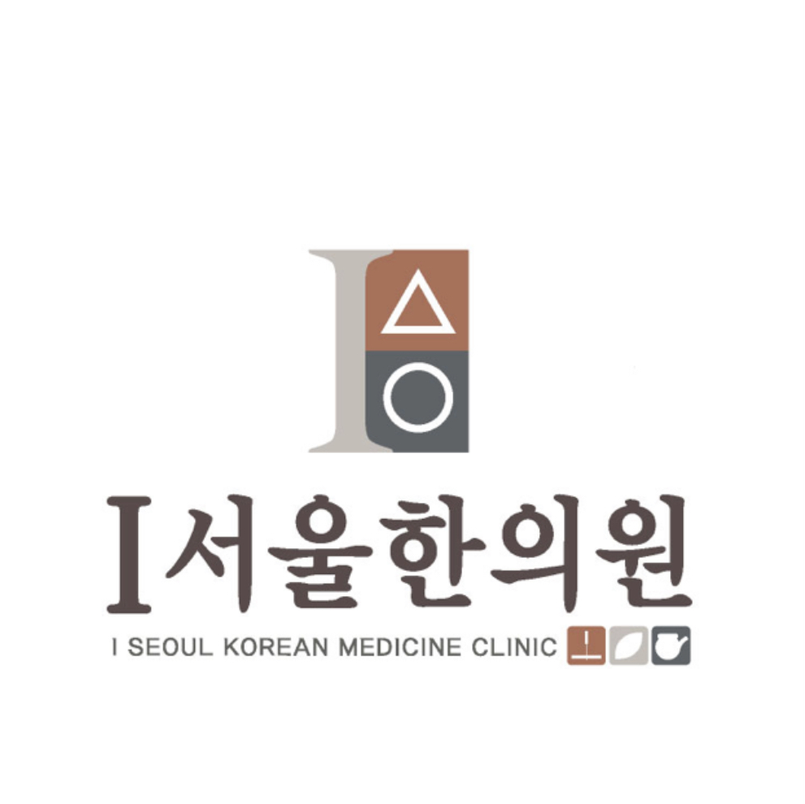

아이(I)서울한의원
01 /05
I SEOUL KOREAN MEDICINE CLINIC
체질에 맞게,
아이부터 어른까지
성장·학습·비염, 체질·여성, 피부·비만·탈모, 통증·교통사고까지 꼭 필요한 안내만 메인에서 바로 보실 수 있게 정리했습니다.
홈페이지 진료 메뉴
요청하신 구조대로 5개 대분류와 세부 클리닉을 나눠 구성했습니다.
CLINIC STORY
스크롤로 보는 한의원 진료 공간
내원 전 분위기를 편하게 확인하실 수 있도록 진료 장면과 공간 이미지를 구성했습니다.
접수/상담 공간
처음 오시는 분도 편안하게 상담받을 수 있는 안내 동선을 운영합니다.
대기 라운지
진료 전후로 긴장을 낮출 수 있도록 차분한 대기 공간을 유지합니다.
맞춤 치료실
증상과 체질을 확인한 뒤 개인별 치료 계획에 맞춰 진료를 진행합니다.
침치료 공간
성장·비염·통증 등 증상에 맞는 치료가 가능하도록 분리된 공간으로 운영합니다.
회복 관리 진료
교통사고 후유증과 만성 통증은 회복 단계에 맞춰 세밀하게 안내합니다.
VISIT INFO
만촌동에서 만나는 아이(I)서울한의원
진료 시간, 위치, 대중교통 정보를 내원 전 바로 확인하실 수 있도록 정리했습니다.
체질과 회복을 상징하는 한방 진료 이미지
아이(I)서울한의원 은 성장·학습·비염, 체질·여성, 피부·비만·탈모, 통증·교통사고 진료를 큰 흐름으로 나누어 안내합니다.
- 아이의 성장에 밑거름이 되고 성장기 고민을 함께 나누는 상담을 지향합니다.
- 조제부터 탕전까지 원장이 직접 관리하며 체질에 맞는 방향을 설명드립니다.
- 담티역 인근 만촌3차 화성파크드림 상가동 2층에 위치해 있습니다.
진료 시간
월·금 09:00 - 18:30
화·목 09:00 - 20:00 야간진료
수요일 09:00 - 13:00 오전진료
토요일 09:00 - 16:00
점심시간 평일 13:00 - 14:00
일요일 휴진
공휴일은 휴진 또는 선택 진료로 운영될 수 있어 내원 전 전화 문의를 권장드립니다.
위치 안내
주소
대구광역시 수성구 교학로 13, 만촌3차 화성파크드림 상가동 201호
지하철 2호선 담티역 2번 출구에서 약 250m 거리에 있습니다.
버스 309, 349, 509, 609, 840, 937, 990번은 담티역 하차 후 농협 맞은편 길을 따라 이동하시면 됩니다. 234, 425번은 만촌3차화성파크드림 건너에서 하차 후 길 건너편입니다.
아이(I)서울한의원 대구광역시 수성구 교학로 13, 만촌3차 화성파크드림 상가동 201호
현재 지도 키가 등록되지 않아 대체 지도로 표시됩니다. 아래 네이버/카카오/다음 버튼을 이용해 주세요.
CONTACT
053-425-1900
대구광역시 수성구 교학로 13, 만촌3차 화성파크드림 상가동 201호
내원 포인트
- 초진 상담 시 현재 증상, 체질, 생활 습관을 함께 확인합니다.
- 성장·학습·비염, 체질·여성, 피부·비만·탈모, 통증·교통사고 진료를 분리해 안내합니다.
- 궁금한 진료 항목은 메인 카드나 상단 메뉴에서 바로 이동할 수 있습니다.